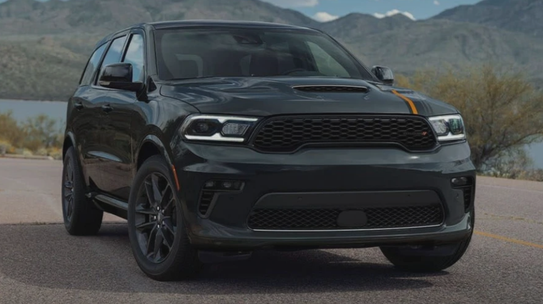
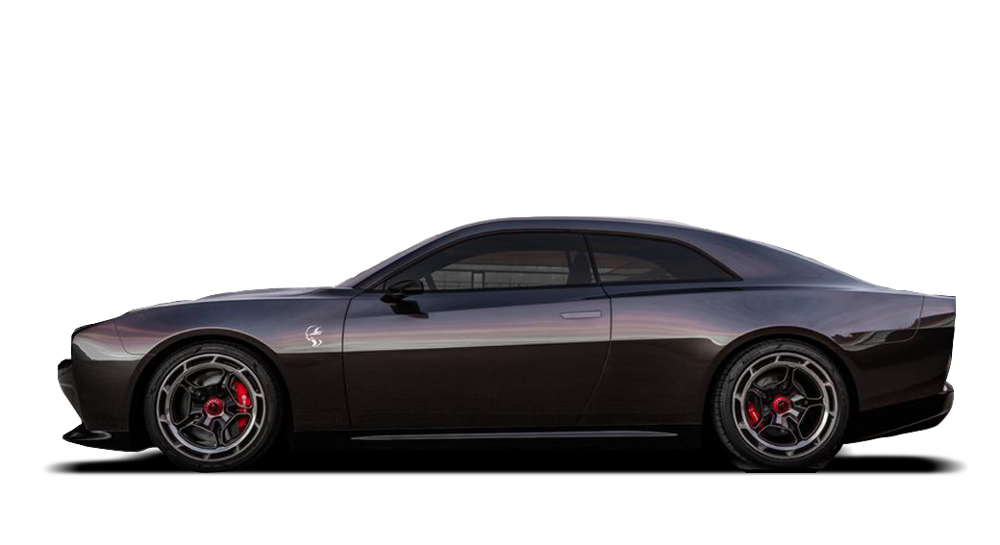
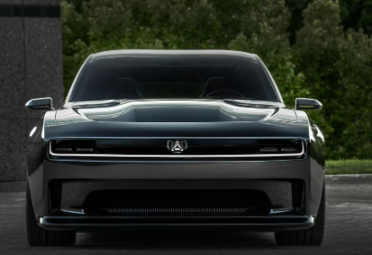

La tercera generación de la Dodge Durango llevaba fabricándose desde 2010 y cuando todo parecía que en 2024 nos despediríamos de esta icónica SUV, la marca decidió extender su producción hasta 2025. Pero lo que es un hecho, es que este modelo está viviendo sus últimos meses. Sin embargo, Dodge se está transformando en una marca que apuesta fuerte por la electrificación, por lo que no había más espacio para esta añeja SUV y su, aunque veterano, también magnífico V8 Hemi.
Gracias a los colegas del periódico Windsor Star, sabemos que Stellantis presentaría la nueva generación de esta SUV a finales de 2026, la cual se fabricaría en la planta de Windsor Assembly, Canadá, y compartiría mucho con el nuevo Charger como la plataforma “STLA Large”.
Además, este crossover eléctrico de tres filas de asientos podría incorporar una batería de 100.5 kWh, así como un sistema de tracción total de doble motor. Si tomamos como referencia al Charger, la potencia estaría en torno a los 456 hp para la versión de acceso, mientras que el Charger Daytona Scat tiene 630 hp. Tampoco hay que olvidarse del motor V6 biturbo Hurricane, que ofrece salidas de 420 hp y 550 caballos de fuerza.
No obstante, todo indica que la nueva Durango no vendrá sola. Según un informe, la factoría canadiense también se está preparando para albergar un nuevo crossover de Chrysler de dos filas de asientos, el cual entraría en producción a principios de 2026, basado en la plataforma STLA Medium.
Parece que los días de los orgullosos muscle cars estadounidenses con potentes motores V8 y escapes rugientes pronto serán cosa del pasado. Los modelos Charger y Challenger de Dodge se despedirán en 2023, y los modelos eléctricos también están invadiendo marcas clásicas como el Chevy Camaro y el Ford Mustang con el famoso Mach-E.
Aún así, Dodge no quiere que llores por el muscle car todavía. El nuevo Dodge Charger Daytona SRT Concept es un coupé eléctrico de alto rendimiento diseñado para llevar adelante el legado impetuoso de Dodge y convertirse en "el futuro de los muscle electrificados".
El corazón de este Daytona SRT es su arquitectura eléctrica de 800 voltios bautizada como Banshee. Esto es el doble del voltaje que la arquitectura de 400 voltios utilizada por muchos otros vehículos eléctricos y permite una carga más rápida, una mejor refrigeración para los motores eléctricos y un cableado más ligero.
Aunque Dodge aún no ha compartido ningún detalle de rendimiento o tren motriz para el concepto, afirma que el Daytona SRT será más rápido que sus primos con motor Hellcat V8 "en todas las medidas clave de rendimiento".
Para dar a los conductores la sensación de "puntos de cambio distintivos", Dodge ha dotado al Daytona SRT de una transmisión de varias velocidades. Aunque no podemos asegurarlo, parece probable que el Daytona SRT use una transmisión de dos velocidades para mejorar la aceleración y la eficiencia.